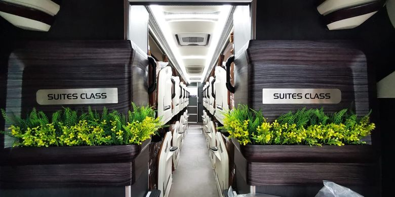
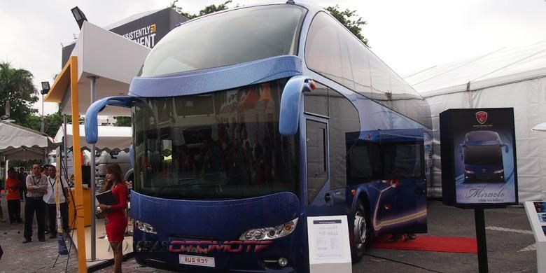

Siapkan Rp 1,8 miliar Kalau Mau Membuat Bus Suites Class
Populasi bus dengan bodi suites class di Indonesia sudah relatif banyak. Keistimewaan dari bodi suites class ini yaitu seluruh kursinya yang memakai sleeper seat, sehingga sangat nyaman untuk perjalanan jauh.

Saat ini baru karoseri Laksana yang membuat bodi bus suites class dan diberi nama Legacy SR2 Suites Class. Bus ini hanya diisi 21-23 sleeper seat saja, selain itu tiap kursi memiliki sekat, seperti naik pesawat kelas bisnis.
Lalu dengan bentuk kabin yang mewah ini, kira-kira berapa biaya untuk membuat bus suites class ini?
Baca Selanjutnya...
Export Manager karoseri Laksana, Werry Yulianto mengatakan, biaya pembuatan bodi suites class, bisa disesuaikan dengan sasis bus yang digunakan maupun spesifikasi yang ada di kabinnya.
“Misalnya paling standar dengan bodi Hino RN 285 sekitar Rp 1,8 miliar sudah termasuk AC namun tanpa Audio Video On Demand (AVOD) di kursi penumpangnya,” kata Werry kepada Kompas.com, Selasa (20/10/2020).
Kalau dilihat, harga satu sasis Hino RN 285 sekitar Rp 980 jutaan. Pembuatan bus suites class bisa lebih mahal jika menggunakan sasis premium seperti Mercedes Benz OH 1626 atau OH 1836, begitu juga sebaliknya.
Sasis Hino RN 285 sendiri sudah mumpuni untuk mengangkut bodi suites class. Hino RN 285 menggunakan mesin diesel 7.684 cc enam silinder segaris yang menghasilkan 281 TK dan torsi 892 Nm. Untuk suspensinya juga sudah memakai air suspension.
Jika harga total bus suites class dikurangi dengan harga sasis Hino RN 285, untuk bodinya saja dihargai Rp 820 jutaan. Jika dibandingkan dengan bodi bus biasa, harga untuk bodinya sekitar Rp 500 juta - Rp 600 jutaan.
“Yang bikin mahal itu mebelnya, yang membuat model cabin personal. Harga Rp 1,8 miliar itu hanya estimasi termurah. Kalau paling mahal, bisa menyentuh Rp 2 miliar,” ucap Werry.
Mengenal Sasis Bus MAN yang Jarang Digunakan oleh Bus AKAP
Produsen sasis untu bus antar kota antar provinsi (AKAP) di Indonesia datang dari berbagai negara. Misalnya seperti Mercedes Benz, Scania, Volvo yang berasal dari Eropa dan Hino, Golden Dragon dari Asia.

Namun ada satu lagi sasis bus dari Eropa yang peredarannya sangat jaran di Indonesia, yaitu sasis MAN dari Jerman. Awal masuk Indonesia pada tahun 2000-an, namun penjualannya tidak begitu baik pada waktu itu.
Kemudian MAN kembali hadir di Indonesia pada tahun 2013, membawa sasis R37 triple axle atau tronton. Keistimewaan dari sasis ini yaitu tenaganya yang sangat besar, 460 TK dan torsi 2.100 NM di 1.000-1.400 rpm.
Baca Selanjutnya...
Setahun kemudian, MAN juga merilis penerus dari sasis tronton R37, yaitu RR4 dengan tenaga yang lebih besar lagi, yaitu 480 TK dan torsi 2.300 Nm di 950-1.400 rpm. Jauh di atas sasis tronton lainnya yang hanya 410-430 TK.
Dua PO bus AKAP yang menggunakan sasis tronton ini yaitu PO Nusantara di Kudus dan PO Pelita Paradep di Medan. Uniknya lagi, kebanyakan sasis MAN R37 dan RR4 ini menggunakan bodi buatan karoseri Nusantara Gemilang.
Anggota Forum Bismania Indonesia, Dimas Raditya mengatakan, ada beberapa hal yang membuat sasis MAN R37 dan RR4 ini tidak laku di pasaran, pertama dari harga, kemudian jaringan, dan terakhir eksistensinya.
“Setahu saya harga sasis MAN tronton ini lebih mahal dibanding pesaingnya. Kemudian jaringannya yang kurang luas malah bikin kurang diminati,” ucap Dimas kepada Kompas.com, Jumat (16/10/2020).
Untuk harga sasisnya saja, belum termasuk bodinya, PO bus harus merogoh kocek Rp 2 miliar. Hal ini disebabkan teknologi sasis MAN yang diklaim canggih sehingga dibanderol dengan harga yang fantastis.
Selanjutnya yaitu soal eksistensi, merek MAN masih kurang eksis di Indonesia. Dimas mengatakan, Hal ini nantinya akan menyulitkan PO bus untuk mencari suku cadang jika bus mengalami masalah.
“Eksistensi ini maksudnya seperti populasi sasis ini di jalanan, keikutsertaan di pameran-pameran masih kurang, sehingga kurang eksis,” kata Dimas.
Selain dipakai oleh PO Nusantara dan PO Pelita Paradep sebagai bus AKAP, sasis MAN juga dipakai untuk bus tingkat pariwisata di Jakarta. Bodi yang digunakan juga sama, dari karoseri Nusantara Gemilang.